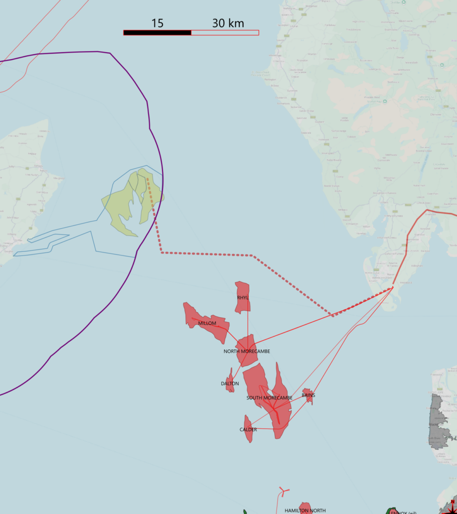

The Isle of Man Gas Opportunity
Local Gas. Lower Emissions. Long-Term Public Value.
Situated within the Isle of Man’s territorial waters lies a potentially significant gas discovery. The gas development could deliver billions of pounds in tax revenue to the Isle of Man.
The gas field sits directly beneath the proposed Mooir Vannin wind farm, however, the gas field cannot be developed if the wind farm is in place. It may be possible to develop the wind farm once the gas field has been developed. There is thus economic competition for the same sea-bed area, with the choice of:
- Gas only.
- Wind only.
- Gas + wind – but NOT wind + gas.
